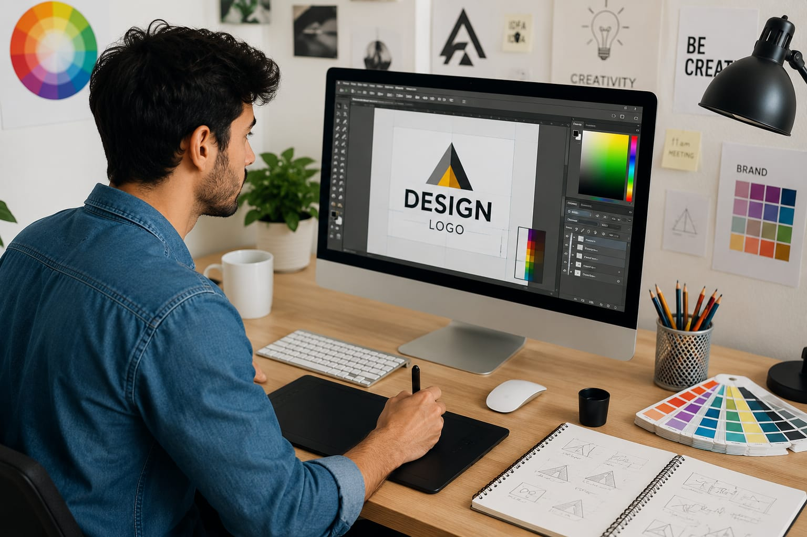

🎨 Graphic Designer
🧑🎨 What Do They Do?
- When you open YouTube, Instagram, or a shopping app
- you might have seen the posters, logos, and images.
- Someone designed all these to make them attractive and easy to understand.
- That person is called a Graphic Designer. 👉 In simple words: Graphic Designers create visuals that make ideas, brands, and products look attractive and easy to understand.

🎓 How to Become a Product Designer
After completing 10th, students can start learning graphic design, visual communication, drawing, typography, branding, and digital design tools through diploma or certificate courses.
Diploma in Graphic Design
Duration: 1 Year
Eligibility: Class 10 pass (Any stream)
Exam: Merit-based or institutional interview
Certificate in Animation & Graphics Design
Duration: 6 Months – 1 Year
Eligibility: Class 10 pass (Any stream)
Exam: Direct admission or portfolio review
Diploma in Applied Arts (Pre-Degree)
Duration: 2–3 Years
Eligibility: Class 10 pass
Exam: State-level Fine Arts CETs or merit-based admission
📝 Exam Details
(Click on the exam name to see full details)
Fine Arts CET Portfolio Review Merit-Based AdmissionNote: Students can later move to degree courses in graphic design, visual communication, or applied arts through higher studies.
After completing 12th, students can study graphic design, visual communication, branding, advertising, illustration, multimedia, and digital media through professional degree courses.
B.Des in Communication Design
Duration: 4 Years
Eligibility: 10+2 pass (Any stream)
Exam: NID DAT, UCEED, NIFT, SEED
BFA in Applied Arts
Duration: 4 Years
Eligibility: 10+2 pass (Any stream)
Exam: MAH-AAC-CET, CUET, or university-specific fine arts tests
B.Sc / BA in Multimedia & Graphic Design
Duration: 3 Years
Eligibility: 10+2 pass (Any stream)
Exam: Merit-based or CUET (for some universities)
📝 Exam Details
(Click on the exam name to see full details)
NID DAT UCEED NIFT Entrance Exam SEED Exam MAH-AAC-CET CUET Merit-Based AdmissionNote: Students can later specialize in branding, UI/UX design, advertising, motion graphics, illustration, or digital media design.
After graduation, students can specialize in advanced graphic design, branding, visual communication, digital media, and creative direction through master’s degrees or postgraduate diploma courses.
M.Des in Graphic Design / Visual Communication
Duration: 2 Years
Eligibility: Bachelor’s Degree (B.Des, BFA, B.Tech, or related fields preferred)
Exam: CEED, NID DAT (M.Des)
MA in Graphic Design / Communication Design
Duration: 2 Years
Eligibility: Graduation in any field (portfolio preferred)
Exam: Institutional entrance exams or portfolio review
Post Graduate Diploma (PGD) in Graphic Design
Duration: 1 Year
Eligibility: Graduation in any field
Exam: Portfolio review and personal interview
📝 Exam Details
(Click on the exam name to see full details)
CEED NID DAT (M.Des) Portfolio Review Personal Interview Institutional Entrance Exam(Age limits, marks, and admission process may vary depending on the college or state. These courses are available in many colleges and universities across India. You can choose colleges based on your location, budget, and entrance exams.)
🏫 Top Colleges
Imagine you are working as a Graphic Designer in a company.
A brand wants to design their contents.
Your job is to create posters, banners, logos, and digital content.
You sketch ideas and experiment with different styles and layouts.
You choose colors, fonts, icons, and images to make the design attractive.
The final designs are used in ads, websites, packaging, or social media.
If you enjoy doing this, then this career may suit you.
Where do Graphic Designers work? (Job Roles + Growth)
These are some roles you can explore in Graphic Design.
You usually start with beginner roles and grow with experience.
🟢 Beginner Roles
Junior Graphic Designer
After 10th / 12th / Diploma
Creates posters, banners, logos, and social media designs.
Social Media Designer
After Certification / Diploma
Designs Instagram posts, reels, stories, and online ads.
DTP Operator
After 10th / Diploma
Prepares newspapers, magazines, brochures, and print layouts.
Logo Designer
After Diploma / BFA
Creates logos and simple brand visuals for companies.
🔵 Mid-Level Roles
Visual Designer
After B.Des / BFA + Experience
Creates the visual style, colors, and layouts for brands.
Motion Graphics Artist
After Animation / Design Degree
Creates moving graphics, animated videos, and ad visuals.
Brand Identity Designer
After B.Des / Experience
Designs logos, brand colors, and company identity systems.
UI Designer
After B.Des / UI-UX Courses
Designs screens, buttons, and layouts for apps and websites.
🟣 Advanced Roles
Art Director
After Graduation + Experience
Leads creative teams and decides the overall design style.
Creative Lead
After Senior Experience
Manages designers and checks the quality of creative work.
Design Director
After M.Des / Leadership Experience
Plans long-term creative strategies for companies and brands.
Creative Consultant
After Industry Experience
Gives creative advice to brands, startups, and media companies.
Global Ad Agencies & Design Studios
Work with Pentagram, Landor, or Leo Burnett.
Big Tech & Product Companies
Design user interfaces (UI) for products used worldwide.
Entertainment & Media Giants
Create motion graphics, digital content for OTT and gaming companies.
FMCG & Global Retail Brands
Design packaging, branding for international consumer brands.
Remote & Freelance Marketplaces
Work globally using platforms like Upwork, Behance, and Fiverr.
(Click Yes or No for each question)
1. Do you like drawing?
2. Do you notice logos, posters, or social media designs around you?
3. Do you notice colors, fonts, or designs when you use apps or websites?
4. Have you ever tried editing photos, making posters, or designing something for fun?
5. Do you enjoy expressing ideas in creative ways?